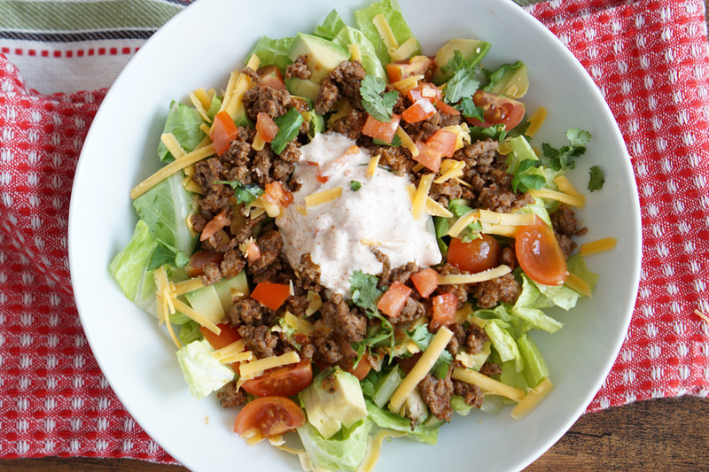

Keto-friendly Taco Salad with ground beef

Quick to make low carb taco salad!
Ingredients
- 1 lb. ground beef
- 1 packet Taco seasoning mix
- 1 bag shredded or romain lettuce
- Mexican-blend shredded cheese mix
- 1 tomato
- 1 Avocado>
- 1 Tube of sour cream
- 2/3 cup water
Steps
- In a non-stick pan, brown ground beef at medium heat.
- Once browned, strain the excess grease, return the ground beef back to the pan and mix in taco seasoning and water.
- Bring to boil.
- Cook for five minutes.
- Dice tomato
- Cut avocado in half, discard the pit.
- Mix ground beef and lettuce into a bowl.
- Top with tomatoes, cheese, sour cream, scoop avocado and distribute evenly. Serve and enjoy!